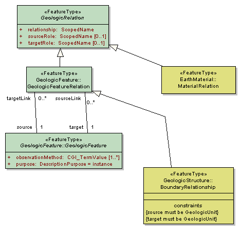

Package GeoSciML/GeologicRelation
The GeoSciML GeologicRelation package contains the root relation class.
Geologic Relations are typed, directed associations between geologic objects. Represents any of a wide variety of relationships that can exist between two or more Features or other entities. For example, the GeologicRelation "intrudes" is a relationship between an intrusive igneous rock and some host rock. Includes spatial, temporal, sequence, correlation, and parent/child relations.
Class Summary |
|
| <<FeatureType>> Classes | |
GeologicRelation
<<FeatureType>>
|
The GeologicRelation class is an abstract class that defines the general structure used to define relationships between any feature or object within GeoSciML. Relationships are always binary and directional. There is always a single source and a single target. The relationship is always defined from the perspective of the Source and is generally an active verb. Example: a Source may point to an intrusive igneous rock body. In this case, the Target would point to the appropriate host rock body and the relationship attribute would be 'intrudes'. Other appropriate relationship attributes might include: overlies, offsets, crosscuts, folds, etc. Many other types of relationships can also be accommodated via GeologicRelation, for example, topological relations between spatial objects could be described where they are scientifically significant. |
Tagged Values |
||
| Tag | Value | Notes |
| xsdDocument | geologicRelation.xsd | Description: Relative path to XML Schema document corresponding to this package. |
UML Diagram: Summary diagram: Geologic Relation
